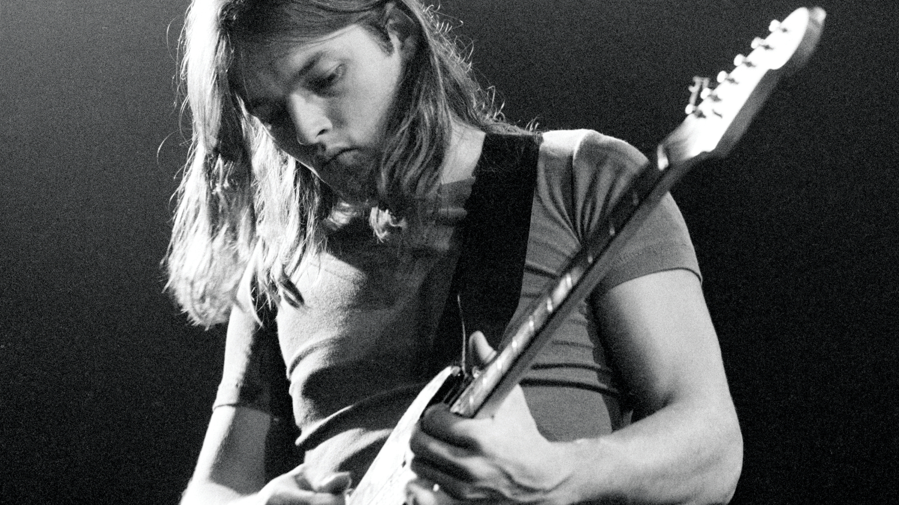
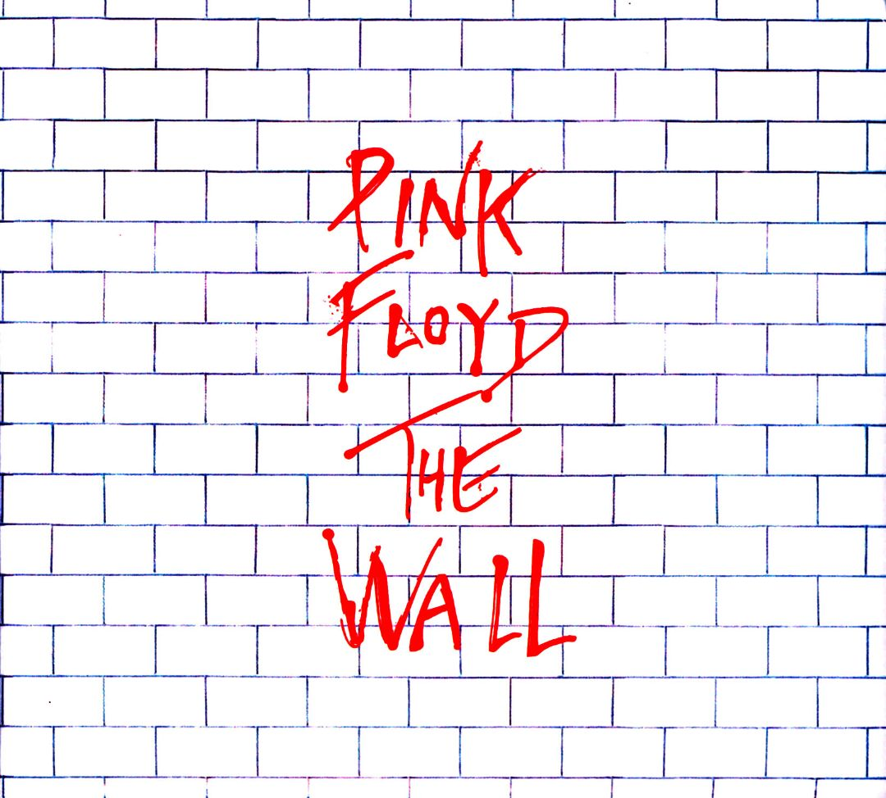

David Gilmour G.O.A.T

Who is David Gilmour?
Born on March 6, 1946, David Gilmour is a renowned British musician acclaimed for his mastery of guitar music and vocals. Primarily recognized as the lead guitarist and vocalist of the rock band Pink Floyd, Gilmour's guitar solos and deft collaboration helped shape Pink Floyd's iconic sound, contributing to albums such as "The Dark Side of the Moon" and "The Wall." Following the Pink Floyd legacy, he embarked on a successful solo career, producing albums that showcased his musical talents.
What is he great at?
David Gilmour is widely renowned for his guitarist and vocalist abilities. Gilmour's guitar solos are considered some of the most iconic of all time.
| Awards and Accomplishments | Year Obtained |
|---|---|
| Grammy Award for Best Rock Instrumental Performance | 1995 |
| Induction into the US Rock and Roll Hall of Fame | 1996 |
| CBE (Commander of the Order of the British Empire) for services to music | 2003 |
| Induction into the UK Music Hall of Fame | 2005 |
| Ivor Novello Award for Lifetime Achievement | 2008 |
Sources:
Awards/AccomplishmentsCareer